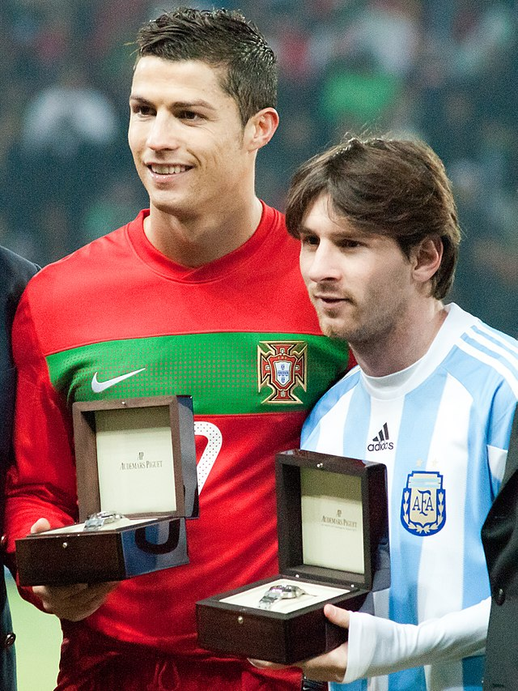
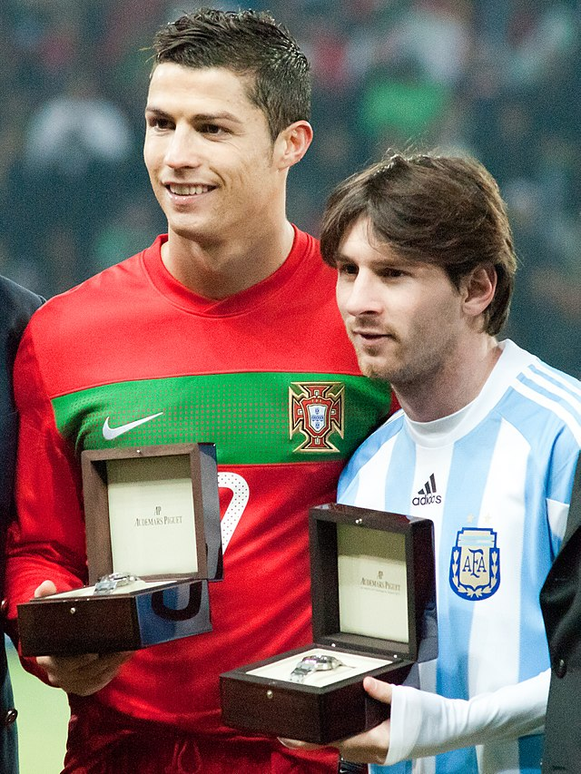
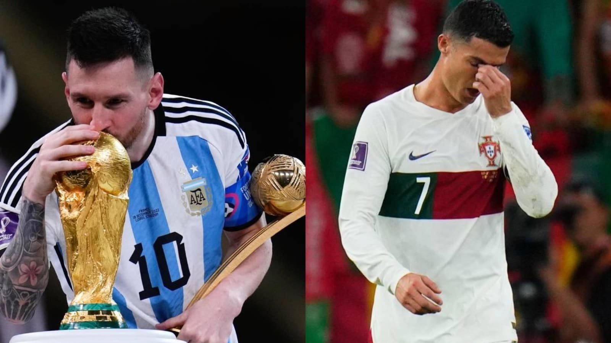
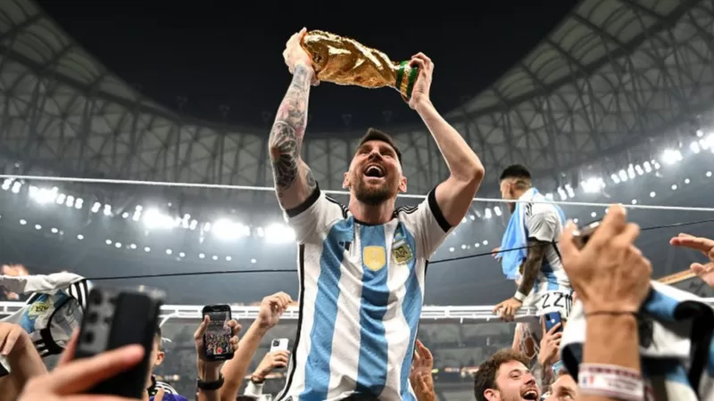
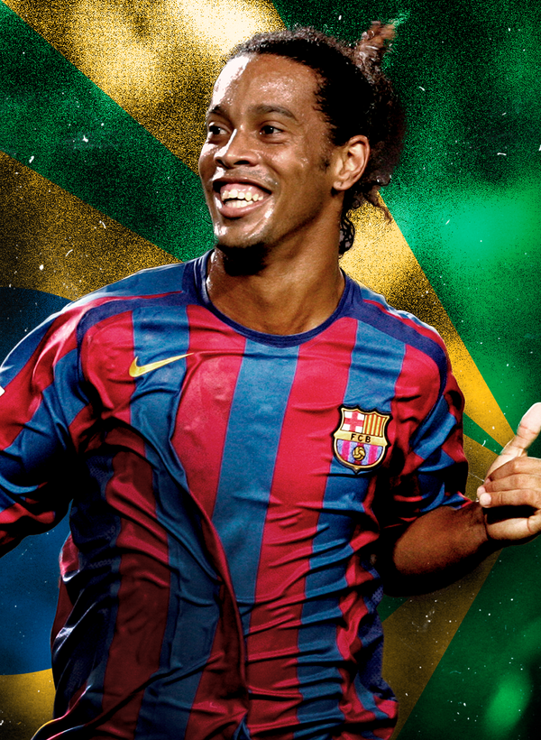
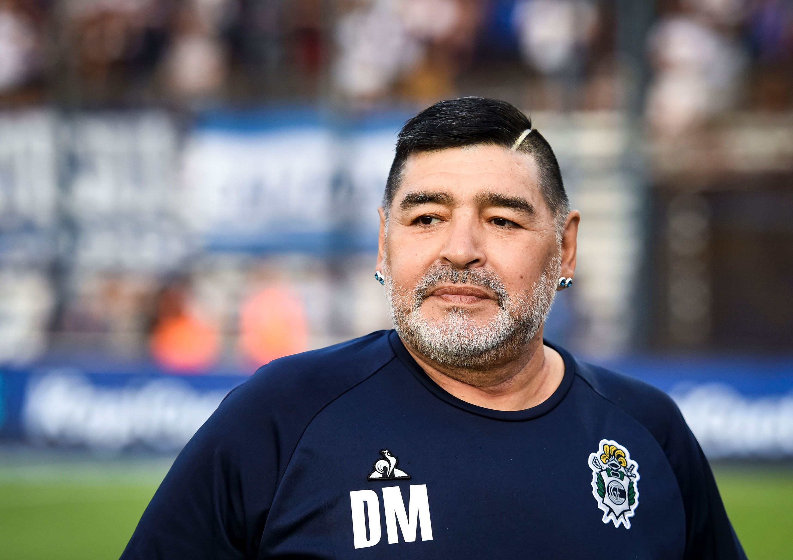

About 1,060,000,000 results (0.61 seconds)
Lionel Messi
Footballer 
 


Height
1.69m
Age
35years Old
(24 June 1987)
Messi is football's
greatest Player
-- Pep Guardiola
Top Stories
News about Jurgen Klopp, Lionel Messi

Goal.com
'The greatest' - Liverpool boss Klopp hails Messi and points to his longevity after Argentina World Cup tri...
22 hours ago

Goal.com
'The greatest' - Liverpool boss Klopp hails Messi and points to his longevity after Argentina World Cup tri...
22 hours ago
News about Jurgen Klopp, Lionel Messi
Goal.com
'The greatest' - Liverpool boss Klopp hails Messi and points to his longevity after Argentina World Cup tri...
22 hours ago
Goal.com
'The greatest' - Liverpool boss Klopp hails Messi and points to his longevity after Argentina World Cup tri...
22 hours ago
About
Lionel Andrés Messi is an Argentine professional footballer who plays as a forward for Ligue 1 club Paris Saint-Germain and captains the Argentina national team. Wikipedia
Born: 24 June 1987 (age 35 years), Rosario, Argentina
Spouse: Antonela Roccuzzo (m. 2017)
Height: 1.69 m
Current teams: Paris Saint-Germain F.C. (#30 / Forward), Argentina national football team (#10 / Forward)
Salary: 41 million USD (2022)
Children: Mateo Messi Roccuzzo, Thiago Messi Roccuzzo, Ciro Messi Roccuzzo
Shoe size: 10
Profile
Lionel Messi - Latest news, transfers, pictures, video, opinion 7 hours ago — Widely regarded as the greatest player in history, the unassuming Argentina forward has become a Barcelona legend winning a succession of La Liga and ...
People also ask
When Messi will be back to PSG?
How many goals have Messi scored in his career?
https://www.fcbarcelona.com › first-team › players › lio...
Lionel Messi - Official Website of FC Barcelona Key Performance Stats Lionel Messi ; Goals · 672 ; Assists · 291 ; Shot Accuracy · 47% ; Chances Created · 409 ; Barça Appearances · 780.
https://www.instagram.com › leomessi
Leo Messi (@leomessi) • Instagram photos and videos Bienvenidos a la cuenta oficial de Instagram de Leo Messi / Welcome to the official Leo Messi Instagram account · 976 posts · 410M followers · 288 following.
https://www.marca.com › ... › Soccer › Ligue 1 › PSG
When will Messi return to PSG action following his World Cup ... 19 hours ago — When will Messi next play for PSG? According to TyC Sports, Messi will miss the next three fixtures that Paris Saint-Germain have on their ...
https://www.transfermarkt.com › profil › spieler
Lionel Messi - Player profile 22/23 | Transfermarkt Lionel Messi, 35, from Argentina ➤ Paris Saint-Germain, since 2021 ➤ Right Winger ➤ Market value: €50.00m ➤ * Jun 24, 1987 in Rosario, Argentina.
Lionel Messi - latest news, stats, transfer rumours and opinion 11 hours ago — Lionel Messi is a legendary forward who plays for Paris Saint-Germain and the Argentina national team.
Videos
Lionel Messi vs Cristiano Ronaldo: Who really is the best?
Sky Sports · Sky Sports
2 days ago

Is it time to FINALLY call Lionel Messi the GOAT?! | ESPN FC
YouTube · ESPN FC
1 day ago
Messi vs Ronaldo | Who is the best?
YouTube · Sky Sports Football
1 day ago
https://www.forbes.com › profile › lionel-messi
Lionel Messi - Forbes 1 Lionel Messi on the 2022 The World's Highest-Paid Athletes - Messi claimed the Ballon d'Or as the world's best soccer player for a record seventh time.
https://www.espn.com › soccer › player › lionel-messi
Lionel Messi Stats, News, Bio | ESPN Latest on Paris Saint-Germain forward Lionel Messi including news, stats, videos, highlights and more on ESPN.
https://fbref.com › FB Home Page › Players
Lionel Messi Stats, Goals, Records, Assists, Cups and more Check out the latest domestic and international stats, match logs, goals, height, weight and more for Lionel Messi playing for FC Barcelona, Argentina men's ...
Related Searches
Bacelona Strickers
 Neymar |
Robert |
 Erling |
 Ronaldinho |
Luis |
 Deigo |
messi psg |
messi net worth |
thiago messi |
messi news |
messi vs ronaldo |
messi video |
messi wife |
why did messi leave barcelona |
Goooooooooogle